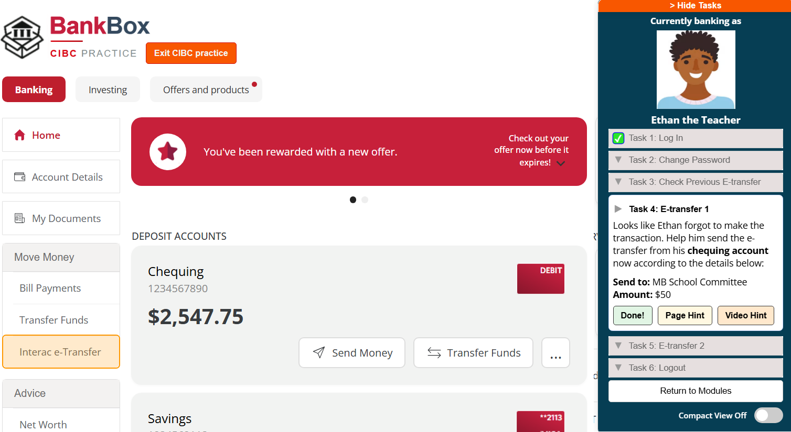
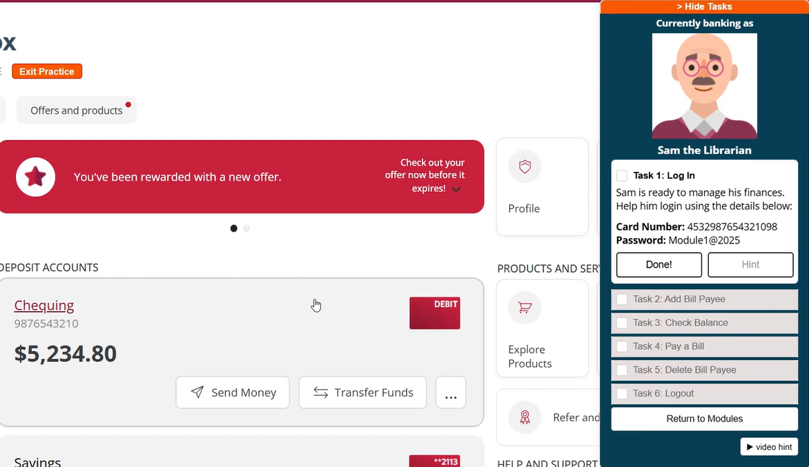
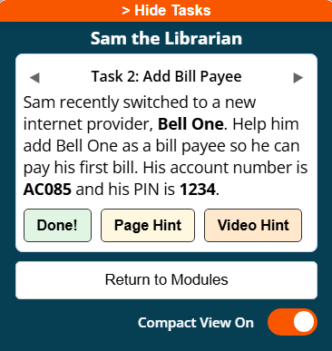
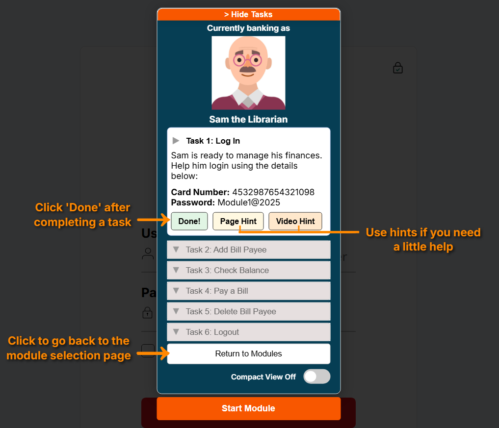

BankBox: Online Banking Practice for Older Adults

Overview
BankBox is an online banking sandbox designed to help people practice everyday banking tasks safely.
I developed BankBox as part of my master’s research, where I explored how tools like this can help older adults (65+) build online banking skills and confidence. The features in BankBox are inspired by Social Cognitive Theory, which outlines different ways to build self-efficacy through learning and experience.
Try BankBox yourself: https://bankbox.cs.umanitoba.ca/
BankBox featured on CBC: https://www.cbc.ca/player/play/video/9.6996632
Design goals
1. Make it feel like real banking interfaces
Practicing on an interface that matches your actual bank makes skill transferability easier, especially for users with less technology experience.
To support this, I recreated interfaces similar to CIBC and Scotiabank (two of Canada’s major banks), with plans to expand to more.
2. Support different learning styles
Some people like to explore and figure things out on their own, while others prefer more structured guidance.
To support both:
- Open exploration lets users freely interact with the system
- Guided learning provides a list of tasks with page hints, video hints, and task completion feedback
Both approaches focus on hands-on learning, so users are actually doing tasks which is great for skill retention and building confidence.
3. Keep it engaging without being overwhelming
Learning something new can feel intimidating, so I wanted to make the experience approachable.
To do this:
- Tasks are grouped into small modules (5–6 tasks each)
- Each module has a persona with a name and picture (e.g., "Sam the Librarian"). The persona frames the module as you helping someone else (clearly a not a real person), which can be more engaging and lessen pressure.
- Tasks in modules are related to the persona which adds real-world context (e.g., "Sam switched to a new internet provider”)
- Two short test modules allow users to test their understanding of tasks they practiced without using hints or feedback
Study
I conducted a study with 12 older adult participants, where they used BankBox and shared their experiences.
The study involved:
- semi-structured interviews
- surveys
- observational notes
The analysis focuses on understanding how people interacted with the system, what challenges they faced, and how it affected their confidence.
We are also planning a follow-up workshop where older adults will use BankBox in a group setting.
Design iteration
One of the most interesting parts of this project was seeing how people actually used the system—and how that differed from what I expected.
Some examples of changes I made based on user feedback:
- Hints weren’t being used much → I made them more visually prominent with stronger color and contrast, moved video hints to a more noticeable position.
- Task pane sometimes blocked important UI → While there was a way to hide tasks, users had to pick between reading instructions and navigating the interface. I added a compact view which served as a middle ground so users could see tasks while navigating.
- Some users didn’t notice the task pane at all or had difficulty using it → I introduced an onboarding modal that highlights it and shows how it works
The goal was to make the system intuitive enough that first-time users could get started independently.



Takeaways
This research has been a really valuable learning experience. I worked on BankBox end-to-end: from early Figma prototypes, to building the system, to planning and conducting the study, and iterating on the design based on user feedback.
Working with participants helped surface usability issues I wouldn’t have anticipated on my own. It was especially interesting to see how differently people approached the same tasks, and how much I could learn through observations and interviews.
Hearing participants reflect on their experience with BankBox was really encouraging and reinforced my belief that tools like this can have a meaningful impact in helping people learn technology.
This work would not have been possible without my supervisor, Dr. Celine Latulipe, who has been a constant source of guidance, support, and encouragement throughout this journey.
I am currently in the data analysis phase.
Study details: https://celinelatulipe.net/the-bankbox-study-practicing-online-banking-in-a-simulated-environment/
Future Direction
Moving forward, I would be interested in:
- exploring collaborative learning (e.g., learning with family members)
- evaluating longer-term skill retention
- expanding support to more banking interfaces